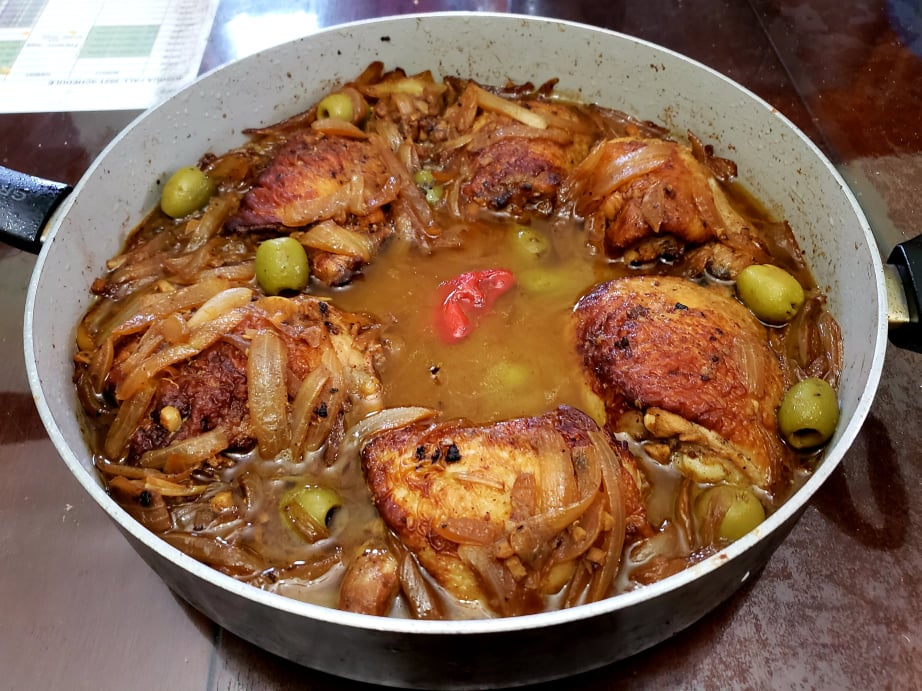

Poulet au Yassa (Yassa Chicken)

Ingredients:
Marinade:
- 2 1/2 - 3 lb Chicken thighs, bone-in, skin-on, about 6 thighs
- 4 Onions, sliced
- 5 cloves Garlic, minced
- 1 tsp Ginger powder OR 1 tbsp Ginger, minced
- 1 Scotch bonnet, or substitute habanero, poked all over with a fork
- 1/2 cup Lemon juice
- 1/4 cup Apple cider vinegar
- 1/4 Canola oil
- 2 tbsp Dijon mustard
- 2 tsp Chicken bouillon powder or cubes
- 1 tsp Salt
- 2 tsp Black pepper
- 2 Bay leaves
Other Ingredients:
- 2-3 tbsp Canola oil
- 3/4 cup Chicken stock
- Optional: 3/4 cup Green pitted olives
Instructions:
- Place the chicken, onions, and pepper into a gallon bag. Combine the rest of the marinade ingredients and pour it over the chicken and onions. Let marinate overnight.
- Heat 2-3 tablespoons of oil over medium heat in a very large pan. Remove the chicken from the marinade and reserve the rest. In batches, sear the chicken for about 7 minutes on each side and then reserve.
- Remove the onions from the marinade and reserve the rest. Place the onions into the pan and fry until the onions have reduced and are caramelized, about 10 minutes.
- Place back the chicken onto the pan, tucking them beneath the onions. Pour the chicken stock and the rest of the marinade into the pan, and place the scotch bonnet in the middle. Reduce the heat to medium-low and continue to cook, flipping and stirring occasionally, for 20 minutes or until the chicken is nice and tender, and the sauce is well reduced to your preference.
- Add the olives and simmer for 1-2 minutes. Taste and adjust the seasonings if necessary. Serve with rice.